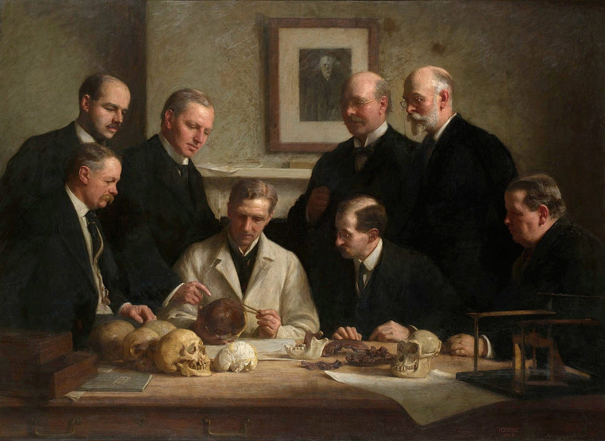
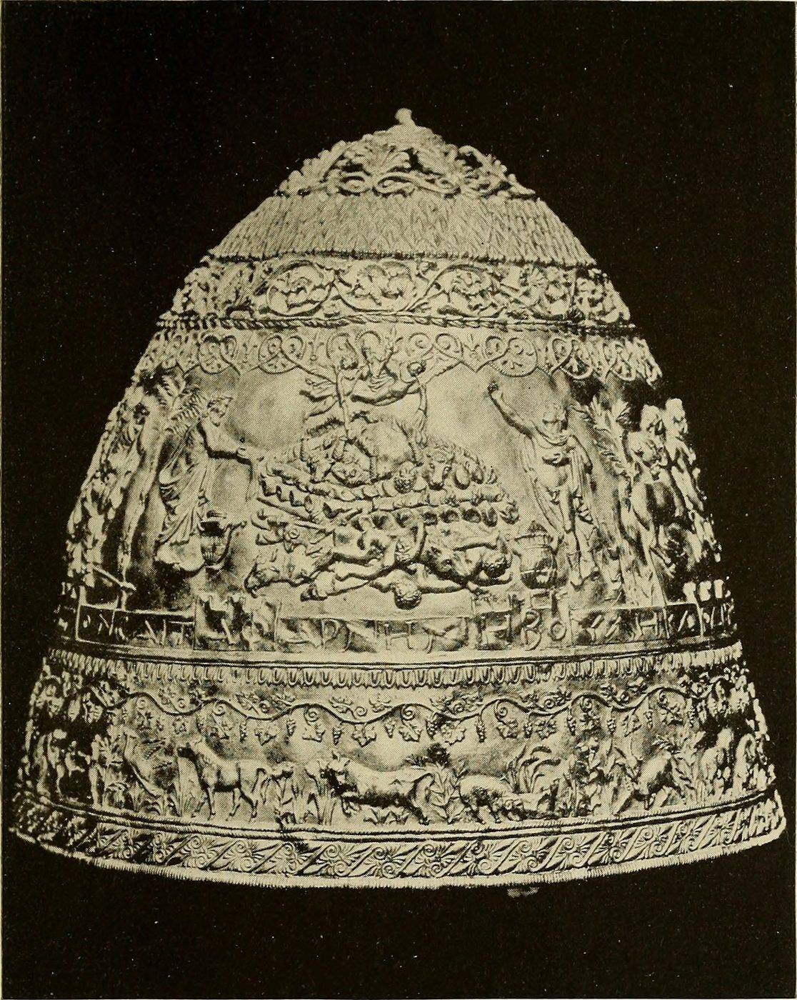
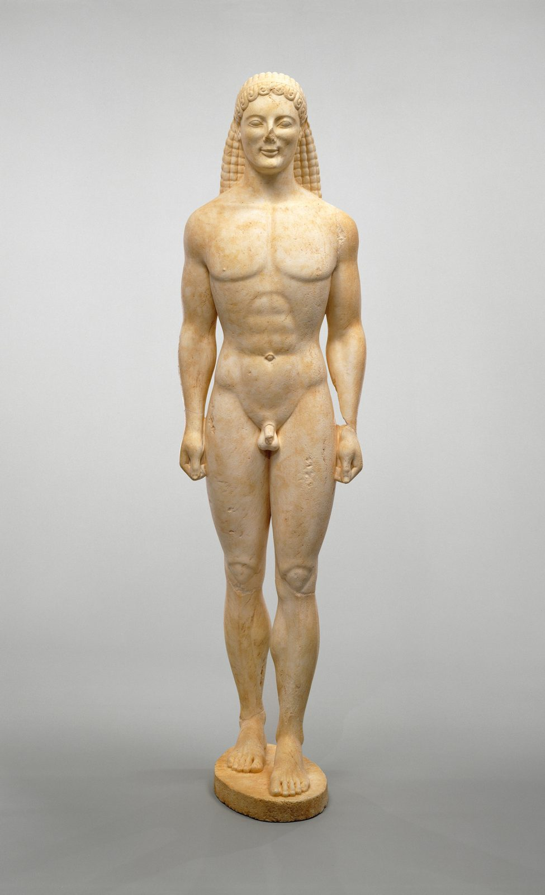

Unit 1 · The investigation of ancient sites and sources · Lesson 6
Fakes and forgeries: testing authenticity
How do historians test whether a source is what it claims to be, and what happens when they cannot be sure?
Year 11 Ancient History · Present with → or space · Read on a phone with R

Connect · 3 minutes · everyone writes one line · press K for the timer
Why is the name ‘Standard of Ur’ an interpretation, not a fact?
Use a precise term and the evidence: who named it, and what do we not know?
‘Standard’ is the name the excavator Leonard Woolley gave it in the 1920s, because he thought it may have been carried on a pole like a battle standard; its real purpose is unknown, so the name records his interpretation, not a fact.
The name tells us what a modern archaeologist guessed, not what the people of Ur called it or used it for: its wooden frame had rotted and the panels were found crushed.
Today: Woolley’s object is genuine, but his label is an interpretation. What if the source itself is a fake?

Learning intentions and success criteria · 2 minutes
Today’s goals
- understand why forgeries are a problem for historians
- explain the methods used to test whether a source is authentic
- explain three methods of authentication
- use two examples to show how forgeries were detected
- explain why some authenticity cases are still contested
Syllabus outcomes: AH-11-05 analyses different types of sources for evidence to support a historical account or argument · AH-11-06 explains differing interpretations and representations of the past · AH-11-07 communicates historical understanding, applying historical knowledge, terms and concepts. Life Skills: AH-LS-08 uses sources to form conclusions about the past · AH-LS-11 communicates information about the past using historical terms and concepts.
Note-making · the routine for the whole course
How to structure your notes
questions and key terms, written after
short phrases, arrows (→ leads to), abbreviations (c. = about; BCE = Before the Common Era)
- 1Rule up the page firstA cue column about a quarter of the page wide; title and date at the top; room for a summary at the bottom.
- 2Listen and look, then writeDon’t copy while a slide is being explained. Phrases, not sentences.
- 3Write your own notes at each ✎ checkpointThen compare with the model notes, one row at a time. Add what you missed in a second colour.
- 4Write the cue questions afterwardsUse exam verbs: explain, analyse, assess. To revise, cover your notes and answer the cues.
- 5Finish with a three-sentence summaryCheckpoints today: why fakes matter, five methods and Piltdown · the four cases (if time, or at home). Your jigsaw grid counts as notes too: keep it with this page.
Key vocabulary · add to the unit word wall
Words for testing whether a source is genuine
| Is it genuine? | Meaning |
|---|---|
| authentication | Testing whether a source is genuine — what it claims to be. |
| forgery | An object or text deliberately made to deceive people into thinking it is genuine. |
| provenance | Where an object was found and its history of ownership since; without it, an object loses its context and may be a fake. |
| context (archaeological) | The exact place and layer an object was found in, and what was found with it. |
| terminus post quem | ‘The date after which’: a coin or object gives the earliest possible date for the layer it is found in. |
| reliability | How far a source can be trusted for a particular question. |
| Ways to test | Meaning |
|---|---|
| radiocarbon dating | Dating once-living (organic) material, such as wood, bone or charcoal, by measuring how much carbon-14 has decayed. |
| thermoluminescence | Dating fired material, such as pottery, by measuring energy stored since it was last heated. |
| fluorine test | Measuring the fluorine a buried bone has taken in from groundwater: bones buried together for the same length of time should hold similar amounts. |
| typology | Dating or grouping objects by comparing their style and form with similar objects. |
| stylistic comparison | Comparing an object’s style, workmanship and materials with genuine objects of the same time and place. |
| patina | The surface layer that slowly forms on old metal or stone. |
1 · Why fakes matter · I do — re-teach · 2 minutes · last lesson’s weakest review question
Re-teach: the review question most of us missed
Answer it from memory first. Then press on to the item your class found hardest: each one links to today.
1 · Why fakes matter · I do — explain the methods
Why fakes are made, and five ways to catch them
- $MoneyCollectors and museums pay a great deal for ancient objects.
- ★FameA spectacular find can make a career.
- ⚑National pride“Proof” that a nation has an ancient, glorious past.
A fake source corrupts the evidence. Conclusions built on it can be wrong, and it can mislead research for decades.
- 1Scientific datingRadiocarbon (once-living material), thermoluminescence (when clay was last fired), fluorine (buried bone). Limit: it dates the material, not when it was carved or written on.
- 2Material and chemical analysisWhat is it made of? Modern metals, glues, paints or stains give a fake away.
- 3Microscopic tool marksModern files, drills and steel tools leave different marks from ancient ones.
- 4Stylistic comparisonDoes it look like genuine objects of its claimed time and place? Limit: style can be copied, and our knowledge has gaps.
- 5Provenance researchTrace its ownership back to a findspot. Limit: documents can be forged too.
Which test would miss a fake made from genuinely old material? Scientific dating: the material really is old. Tool marks, provenance research and the find’s context (where and how it was found) could catch it.
1 · Why fakes matter · I do — the worked model: claim → test → result
Piltdown Man: the claim, and why experts believed it
- Who: Charles Dawson, an amateur archaeologist, with Arthur Smith Woodward, Keeper of Geology at the British Museum (Natural History), now the Natural History Museum, London
- What: pieces of a human-like skull, an ape-like jawbone with teeth, stone tools and animal fossils, all stained dark like the gravel
- Where and when: gravel beds near Piltdown, Sussex, England; ‘found’ between 1908 and 1912, and announced at the Geological Society in December 1912
- The claim: a human ancestor at least 500,000 years old, with a large brain and an ape-like jaw: Eoanthropus dawsoni, ‘Dawson’s dawn man’
Why did it fool experts for about 40 years?
It matched what they expected: a big brain with an ape-like jaw. National pride: “British scientists were desperate to prove that Britain had also played its part in the story of human evolution.” Expert authority: the museum’s own Keeper of Geology backed it. Few could check: “very few scientists were given the opportunity to study the original specimens”: most worked from casts, so few could examine the real teeth, and the fluorine test was not improved and widely used until the 1940s.
1 · Why fakes matter · I do — think aloud · claim → test → result
Piltdown Man: claim → test → result
| When | Step | What it showed |
|---|---|---|
| 1912 | The claim | skull and jaw from one human ancestor, at least 500,000 years old |
| 1949 | Fluorine test (Kenneth Oakley, Natural History Museum) | the bones were far younger: at most about 50,000 years old, so not an early ‘missing link’ |
| 1953–55 | More chemical tests and the microscope (Joseph Weiner and Wilfrid Le Gros Clark of Oxford, with Oakley) | the skull was human but the jaw came from an ape, probably an orangutan; scratches under the microscope showed the teeth had been filed to look human; most finds had been stained to match the gravel |
| 2016 | DNA, CT scans and chemical analysis (a team led by Isabelle De Groote, with the Natural History Museum) | very likely one orangutan, and two or perhaps three humans, possibly medieval; the same methods on every piece point to one forger, most likely Dawson (whether he acted alone is uncertain) |
“The forgery of Piltdown man fooled many palaeoanthropologists for 40 years …” I. De Groote et al., Royal Society Open Science, 2016 · palaeoanthropologists = scientists who study human origins
How certain is the verdict? Which part is still uncertain?
Certain that it is a forgery: several independent tests agree. Less certain who did it and why: most likely Dawson, but the Museum’s Chris Stringer says “we still don't know for sure what Dawson's motivation was”.
Notes checkpoint 1 of 2
Why fakes matter, the methods, and Piltdown
2 · Authentication lab · We do — case-card jigsaw · 25 minutes · press K for the timer
Authentication lab: four cases, one grid
- 1Expert groups · 10 minRead your case card aloud. Fill in your row of the grid. Decide: how certain is the verdict, and why?
- 2Home groups · 12 minOne expert from each case. Teach your case; everyone fills in all four rows.
- 3Whole class · 3 minWhich verdict is least certain, and why?
The highlighted sentences on your card are the key ones. Your grid already has the Claim column filled in.
| Case | Claim | Who doubted it, and why? | Methods used | Verdict | How certain? |
|---|---|---|---|---|---|
| Model · Piltdown | human ancestor, ≥ 500,000 years old (1912) | some anatomists: did skull and jaw belong together? | fluorine test, microscope (file marks), chemical tests (stain), later DNA and CT | forgery: skull pieces from two or perhaps three humans (possibly medieval) + an orangutan jaw | certain it is fake; the 2016 study suggests one forger, most likely Dawson |
| A · Tiara | |||||
| B · Kouros | |||||
| C · Papyrus | |||||
| D · Llygadwy |
2 · Authentication lab · case card A · expert group A
AThe Tiara of Saitaphernes

A solid gold tiara, said by its dealer to have been found at Olbia, a Greek city on the Black Sea coast. Its Greek inscription named it as a gift from Olbia to the Scythian king Saitaphernes, of the 3rd century BCE, and matched an ancient inscription already published. The Louvre bought it in 1896 for 200,000 francs (the purchase was announced on 1 April).
In 1896 scholars, including the German archaeologist Adolf Furtwängler, said in print that it was fake. It was almost perfectly preserved: its dents were on the smooth spaces, never on the figures. The Louvre defended it for years; some French critics claimed Furtwängler acted out of spite because he was German.
“The willingness of individuals or institutions to acquire artifacts with no documented findspot opens a gateway for forgers.” Archaeology magazine (Archaeological Institute of America), 2009
Provenance: no documented findspot, only the dealer’s story; museums in Vienna and London had turned it down. In 1903 a jeweller wrote to a Paris newspaper that he had watched a friend, the goldsmith Israel Rouchomovsky, make it. Rouchomovsky came to Paris, named the books he had copied the designs from, and made part of it again from a sheet of gold. Experts found traces of modern tools, hidden modern soldering, and an inscription raised in relief.
Modern work by Israel Rouchomovsky, a goldsmith working in Odessa (today Odesa, Ukraine), who said the dealer had ordered it as a gift for an archaeologist friend. The Louvre still owns it (in 2009 it was reported not to be on display).
2 · Authentication lab · case card B · expert group B
BThe Getty kouros

A marble kouros (a statue of a standing nude youth) from Archaic Greece, about 530 BCE. A dealer in Basel, Switzerland, offered it to the J. Paul Getty Museum in 1983; the Getty bought it in 1985 (reportedly for about US$9.5 million).
Its style mixes earlier and later features, and its marble comes from the island of Thasos, used at an unexpected date. In 1990 a fake kouros torso was published that closely resembled it; it was suggested that both had been carved in a Rome workshop in the early 1980s.
Provenance: it came with letters, said to date from the 1950s, claiming it had belonged since 1930 to Jean Lauffenberger, a man living in Switzerland; investigation showed the letters were forgeries. Surface analysis: magnesium had leached out of the surface of its dolomitic marble, which was thought to take centuries; later it was shown that this can be done artificially. In 1992 the Getty took it to a conference of experts in Athens: they could not agree.
Undecided. The Getty’s records date it “about 530 BCE or modern forgery”.
“Yet the anomalies of the Getty kouros may be due more to our limited knowledge of Greek sculpture in this period rather than to mistakes on the part of a forger.” J. Paul Getty Museum, object description (CC BY 4.0) · anomalies = features that do not fit
2 · Authentication lab · case card C · expert group C · a written source (no image: see the notes)
CThe ‘Gospel of Jesus’s Wife’ papyrus
On 18 September 2012, at a conference of Coptic scholars in Rome, the Harvard historian Karen L. King announced a scrap of papyrus, about 4 × 8 cm, written in Coptic (the form of the Egyptian language used by Egypt’s Christians). One line reads “Jesus said to them, my wife”. King gave it its name as a label; she stressed it did not show that the historical Jesus was married.
Radiocarbon dating placed the papyrus between 659 and 859 CE; tests on the ink matched ancient carbon inks. Harvard reported: “None of the testing has produced any evidence that the fragment is a modern fabrication or forgery.”
Critics pointed to errors in its Coptic grammar. Its words look like a patchwork of phrases from the Gospel of Thomas, apparently copied from a 2002 PDF edition, including a typing error in that edition. A Gospel of John fragment from the same owner, in the same hand and ink, was “clearly copied from Herbert Thompson's 1924 publication”.
In 2016 the journalist Ariel Sabar investigated where the papyrus had come from and who owned it. After reading his report, King said: “It tips the balance towards forgery.” Sabar later told the story in his book Veritas (2020).
The science dated the papyrus. Did it date the writing?
2 · Authentication lab · case card D · expert group D · an excavation (Time Team, first shown 21 January 2001)
DLlygadwy: a ‘sacred spring’ in Wales
A secluded valley at Llygadwy, Powys, with a natural spring full of finds (hundreds of Roman coins, jewellery, statuettes, carved stone heads), a standing stone, a ‘Neolithic tomb’, a ‘Norman tower’ and a ‘chapel’: all on one landowner’s property. Time Team came to test it.
Local archaeologists were so doubtful that none would appear on the programme. A Neolithic expert: “It looks right, but the fact that a monument this big has seemingly gone unrecorded I find puzzling.”
A ‘salted’ site, Time Team concluded, faked in two periods: a folly tower of the 1800s, when, the programme suggests, a local rector had a hand in placing many of the finds; and a fake ‘tomb’, standing stone, sword and some finds, put there after 1992. The presenter suggested the finds must have come from other sites: “Now they can tell us nothing.”
Excavation: the ‘tomb’ stones were set far too shallow, with modern china and clay pipe in a stone hole. Comparison: the Roman coins were almost all from about 300 CE onwards; at other sacred springs they are mostly 1st and 2nd century. Patina: finds were stained different colours, as if from different soils, and a statuette’s symbol was cut through its old green patina. Maps and building: the ‘tower’ had 19th-century mortar, coal and iron slag in its foundations, a fireplace never used, and was not on the 1844 tithe map: a Victorian folly. Stratigraphy: a genuine Iron Age sword lay on top of barbed wire less than 20 years old, so it must have been buried after the wire, within the last 20 years. Time Team concluded it went in after service cables were laid nearby in 1992.
Mick Aston: two key ideas, stratigraphy and context. “If they're not in the right context, they can't tell us about the people living on that site.”
2 · Authentication lab · We do — home groups · 10 minutes · each expert teaches their case
Home groups: complete the grid for all four cases
| Case | Claim | Who doubted it, and why? | Methods used | Verdict | How certain? |
|---|---|---|---|---|---|
| A · Tiara | gift from Olbia to King Saitaphernes, 3rd century BCE; bought by the Louvre, 1896 | Furtwängler and others said in print it was fake (1896); clues: near-perfect state, dents only on the plain parts | provenance (no findspot) · designs traced to books · tool marks and solder · the maker’s demonstration (1903) | modern work by the goldsmith Israel Rouchomovsky | very certain: the maker came forward and proved it |
| B · Kouros | said to be a Greek statue of about 530 BCE; bought by the Getty, 1985 | scholars: style mixes periods, unexpected marble, a similar fake torso (1990) | provenance (letters forged) · stylistic comparison · surface analysis (can be faked) | undecided: “about 530 BCE or modern forgery” | least certain: tests and experts disagree (Athens, 1992) |
| C · Papyrus | an early Christian text: “Jesus said to them, my wife”; announced 2012 | Coptic scholars: grammar errors, phrases copied from a 2002 PDF edition | radiocarbon and ink tests (seemed ancient) · textual comparison · provenance research | a forgery, very probably modern writing on old papyrus | very likely: even King said the evidence “tips the balance towards forgery” (2016) |
| D · Llygadwy | an ancient sacred spring with prehistoric and Norman monuments | local archaeologists; Time Team’s experts | excavation and stratigraphy · comparison with other springs · patina · maps · barbed wire under 20 years old | salted (Time Team): a 19th-century folly tower, plus a fake tomb, standing stone and finds planted, some after 1992 | certain it was faked; less certain who did it, when and why |
Check your row: does your “How certain?” column give a reason?
2 · Authentication lab · whole class · 3 minutes · cold call
Which verdict is least certain, and why?
Choose one case. Give the evidence on both sides, and say why the experts cannot settle it.
The Getty kouros. The museum that owns it still dates it “about 530 BCE or modern forgery”. Against it: its provenance letters were forged, a similar fake torso exists, and its surface test can be faked. For it: no test has proved it modern, and its odd features “may be due more to our limited knowledge of Greek sculpture in this period”. Forged papers prove the provenance false, not the statue.
Llygadwy: the site was faked. Its sword lay on top of modern barbed wire, so it was buried after the wire was put there (a terminus post quem); Time Team concluded after 1992. Authentication can be close to certain, but some cases stay contested.
Notes checkpoint 2 of 2 If time · or at home
The four cases: what was tested, and how certain?
3 · You do · check first · hinge question · hold up A, B, C or D
Which statement about authentication is most accurate?
- ARadiocarbon dating proved that the ‘Gospel of Jesus’s Wife’ was written in ancient times.
- BA genuine ancient object can still be planted, so where and how it was found must be checked too.
- CAn object bought by a major museum has already been proved genuine.
- DIf an object’s ownership documents are forged, the object itself must be a fake.
B. Llygadwy’s sword was genuine, but it lay on modern barbed wire, so it was buried in modern times. A: radiocarbon dated the papyrus, not the writing. C: the Louvre bought the tiara, and the Getty bought the kouros. D: forged papers prove the provenance false, not the object (the kouros is still undecided).
3 · You do · Writing focus · 4 minutes · I do → We do → apply it in the short answer
Writing focus: open with the answer, then explain each example
Worked example · written for this lesson
Explain why Piltdown Man fooled experts for about 40 years.
Topic sentence (answers the question, main point first):
Piltdown Man fooled experts for about 40 years mainly because it matched what they expected to find, although few of them could examine the original specimens.
Then each point → evidence → what it meant · last sentence: what the points show together.
Not a story (In 1912, Dawson …) and not a definition (A forgery is …).
Your topic sentence first: it answers how. Then your first example: claim → test → result → how certain. Use at least one case from the lab. Your Writing toolkit (booklet pages 3–4): the explanation paragraph.
A second question: Explain why people make fakes of ancient objects. Which opening answers it?
- APeople such as the goldsmith Israel Rouchomovsky have made fakes: in 1903 he made part of the Louvre’s tiara again.
- BPeople call an object a forgery when it was deliberately made to deceive others into thinking it genuine.
- CPeople make fakes for money from collectors and museums, for fame, and for national pride.
- DPeople have made fakes of ancient objects for a very long time, and fakes are a big problem.
It names the reasons the paragraph will explain. A tells one forger’s story. B defines a word the question takes for granted. D says fakes exist but gives no reason.
3 · You do · 13 minutes · press K for the timer · write in full sentences
Short answer: how do historians test authenticity?
- Explain how historians and archaeologists test the authenticity of sources. Use two examples.
- Name at least two methods with precise terms: provenance, thermoluminescence, stylistic comparison, fluorine, stratigraphy …
- For each example: what was claimed, what test was used, what it showed, and how certain the verdict is.
Deconstructed: verb explain, here how · topic: how historians and archaeologists test authenticity · limits: two examples from today’s cases · do: a topic sentence that answers how, then for each example claim → test → result → how certain, and a last sentence on what the examples show together.
Start with: “Historians test authenticity by …” · “For example, in the case of …, … showed that …” · “Another method is …, which …” · “However, some cases are still contested because …” Use your grid and the vocabulary slide.
Prepare both sides of the debate: ‘A museum should never display an object whose authenticity is uncertain.’
Historians and archaeologists test authenticity by combining several methods, because each checks a different part of a source’s story. Scientific dating tests the material itself: fluorine testing in 1949 showed that the Piltdown bones were at most about 50,000 years old, far too young for an early human ancestor, and thermoluminescence can show whether a pot said to be ancient was in fact fired recently. Microscopic study then revealed file marks on the Piltdown teeth, proving deliberate forgery. Stylistic comparison and provenance research test an object against genuine examples and its ownership history: the Tiara of Saitaphernes, bought by the Louvre in 1896, had no documented findspot and was condemned in print by Adolf Furtwängler; in 1903 the goldsmith Israel Rouchomovsky came to Paris, named the books he had copied and made part of it again, and experts pointed to modern tool marks and hidden solder. Methods can disagree, however: tests on the Getty kouros remain inconclusive, so the museum still dates it ‘about 530 BCE or modern forgery’. Authentication is therefore strongest when independent methods point the same way.
Finish your notes If time · or at home
Summary: three sentences
- Why are forgeries a problem for historians?
- How do historians test whether a source is authentic?
- Why are some authenticity cases still contested?
Forgeries are made for money, fame or national pride, and a fake source corrupts the evidence, as Piltdown Man misled the study of human origins for about forty years. Historians test authenticity by combining scientific dating, material analysis, microscopic tool marks, stylistic comparison, provenance research and the context in which an object was found, as at Llygadwy, where a genuine sword lay on modern barbed wire. Some cases stay contested because methods disagree and our knowledge has gaps, so the Getty still describes its kouros as ancient or a modern forgery.
Check · gesture vote · 2 minutes · vote together on “3, 2, 1”
Gesture vote: is the Getty kouros a fake?
“The Getty kouros is a fake.”
↑ thumbs up: agree→ sideways: not sure↓ thumbs down: disagree
Then defend your vote with one piece of evidence from card B.
Agree: a similar fake torso; style that mixes periods; a surface test that can be faked; forged provenance letters (they remove the case for it, but do not prove it fake). Disagree or not sure: no test has proved it modern; the Getty says its oddities may reflect our limited knowledge; experts at Athens (1992) could not agree. Any vote can be strong if it names its evidence and says how sure it is.
Exit ticket · 4 minutes · before you leave
One method, and one forgery it exposed
One method of authentication is …, which tests …
It exposed … because it showed that …
A precise method (fluorine test, microscopic tool marks, stylistic comparison, provenance research, stratigraphy) · a named case it exposed (Piltdown, the tiara, the papyrus, Llygadwy) · exactly what it showed (for example: the Piltdown teeth had been filed; the sword lay on modern barbed wire).
Then check yourself against today’s three “I can” statements. Next lesson: reconstructing the past: beliefs, gaps and provenance.
Practice and review · 1 of 3 · true, false, justify
True or false? Justify your answer
- 1Piltdown Man was exposed soon after it was announced in 1912. False — it fooled experts for about 40 years, until fluorine tests (1949) and chemical and microscope study (1953).
- 2Radiocarbon dating shows when the words on a papyrus were written. False — it dates when the papyrus plant grew; the writing could have been added much later.
- 3The Tiara of Saitaphernes was made by a modern goldsmith. True — in 1903 Israel Rouchomovsky showed investigators how he had made it.
- 4Forged ownership letters prove that the Getty kouros is a fake. False — they prove its provenance is false; the statue itself is still undecided.
- 5A genuine Iron Age sword proved that the Llygadwy spring was an ancient sacred site. False — it lay on modern barbed wire, so it was buried recently: out of context.
- 6Provenance means where an object was found and its history of ownership since. True — without it, an object loses its context and may be a fake.
Practice and review · 2 of 3 · writing
Write it as a historian
In three sentences, explain how one method exposed a fake you did not use in your short answer.
At Llygadwy, stratigraphy showed that a genuine Iron Age sword had been planted. It lay on top of barbed wire less than 20 years old, so it must have been buried within the 20 years before the dig (Time Team concluded after 1992, when service cables were laid nearby). Out of its original context, it could no longer tell archaeologists anything about the people who made or used it.
Explain why the ‘Gospel of Jesus’s Wife’ passed the laboratory tests but is now thought to be a forgery.
Radiocarbon dating placed the papyrus in the 7th to 9th centuries CE, but it dated the material, not the writing on it. Textual comparison showed that its words appear to be copied from a 2002 PDF edition of the Gospel of Thomas, typing error included, and research into its provenance led even Karen King to say that the evidence tipped the balance towards forgery.
This opening tells a story but does not answer the question. Rewrite it so that it answers Explain how historians test authenticity: “In 1949, Kenneth Oakley tested the Piltdown bones for fluorine.”
Historians test authenticity with independent tests, such as the fluorine test that Kenneth Oakley used in 1949 to show that the Piltdown bones were far too young for an early human ancestor.
Prepare both sides: ‘A museum should never display an object whose authenticity is uncertain.’
For the motion, displaying a doubtful object risks teaching visitors a falsehood, and a museum’s authority can make a fake seem genuine, as the Louvre’s did for the Tiara of Saitaphernes. A museum that displays it may also reward the market that produces forgeries. Against the motion, uncertainty is itself something visitors can learn from: the Getty kouros, labelled as possibly a modern forgery, shows how authentication works and how experts disagree. Hiding every uncertain object would remove many genuine ones too, because certainty is rare. On balance, a museum may display an uncertain object if its label states the doubt honestly, as the Getty’s catalogue entry does.
Practice and review · 3 of 3 · cover your notes and answer from memory
Quick checks
- Explain why forgeries are a problem for historians. A fake source corrupts the evidence: conclusions built on it can be wrong, and it can mislead research for decades, as Piltdown did for about 40 years.
- Explain three methods of authentication. Any three, with what they test: scientific dating (radiocarbon, thermoluminescence, fluorine), material and chemical analysis, microscopic tool marks, stylistic comparison, provenance research.
- How was Piltdown Man exposed? Fluorine tests (1949) showed the bones were far younger than claimed; chemical tests and the microscope (1953) showed an ape jaw with filed teeth and bones stained to look old.
- Why did tests on the ‘Gospel of Jesus’s Wife’ not settle the case? They dated the papyrus and the ink, not when the words were written; copying from a modern edition and provenance research pointed to forgery.
- How did stratigraphy expose Llygadwy? The sword lay on modern barbed wire, so it was buried after the wire was put down (Time Team: after 1992); the ‘tomb’ stones were set too shallow, with modern china in a stone hole.
- Explain why some authenticity cases are still contested. Methods can disagree, documents and surfaces can be faked, and our knowledge has gaps: the Getty still dates its kouros “about 530 BCE or modern forgery”.
Sources and credits
Where everything comes from
Piltdown: I. De Groote et al., “New genetic and morphological evidence suggests a single hoaxer created ‘Piltdown man’”, Royal Society Open Science 3 (2016), 160328 (CC BY 4.0), full text; M. R. Goodrum and C. Olson, British Journal for the History of Science 42.1 (2009), abstract; Natural History Museum, “Piltdown Man” and news report, 10 August 2016; Geological Society of London, “Discussion on the Piltdown Skull, 1915”.
Tiara: “Saitaphernes’ Golden Tiara”, Archaeology magazine (Archaeological Institute of America), 2009; R. Munro, Archæology and False Antiquities (London, 1905; Philadelphia, 1906; public domain).
Kouros: J. Paul Getty Museum, object record 85.AA.40 (metadata CC0; description text CC BY 4.0); Getty Research Institute, CONA record 700006605; N. Brodie, “Getty Kouros”, Trafficking Culture (2012).
Papyrus: J. Beasley, “Papyrus fragment put to test”, Harvard Gazette, 10 April 2014; A. Sabar, The Atlantic, 16 June 2016, excerpt on History News Network; A. Bernhard and C. Askeland, New Testament Studies 61.3 (2015), abstracts at Cambridge Core; further reading: A. Sabar, Veritas (Doubleday, 2020).
Llygadwy: Channel 4, Time Team, A Celtic Spring, Llygadwy (first shown 21 January 2001), programme web page (Internet Archive copy).
Quotations are short extracts for teaching, credited here; the model answers, the completed grid and the summary were written for this lesson.
Outcomes and content: NSW Education Standards Authority (NESA), Ancient History 11–12 Syllabus (2024). © NESA.
Teacher resources: Piltdown Hoax – Historical Authenticity and Reliability (presentation) and Piltdown Hoax Worksheet; Time Team DVD ‘Llygadwy’ worksheet (class notebook).
- Discussion on the Piltdown Skull (John Cooke, 1915) · Painting: John Cooke (1915) · Public domain · source
- The ‘Standard of Ur’, war side · Photo: BabelStone, adjusted by LeastCommonAncestor · CC BY-SA 3.0 · source
- The Tiara of Saitaphernes (Munro 1906, plate XVIII) · Robert Munro (1906), pl. XVIII · Public domain · source
- The Getty kouros (J. Paul Getty Museum, 85.AA.40) · Photo: J. Paul Getty Museum · CC0 1.0 · source
.jpg){kind=link}

_(14598058297).jpg){kind=link}
.jpg){kind=link}
All images are public domain or openly licensed, and were resized for the web. Each is shared under the licence shown. There is no image of the papyrus because no openly licensed photograph was found.